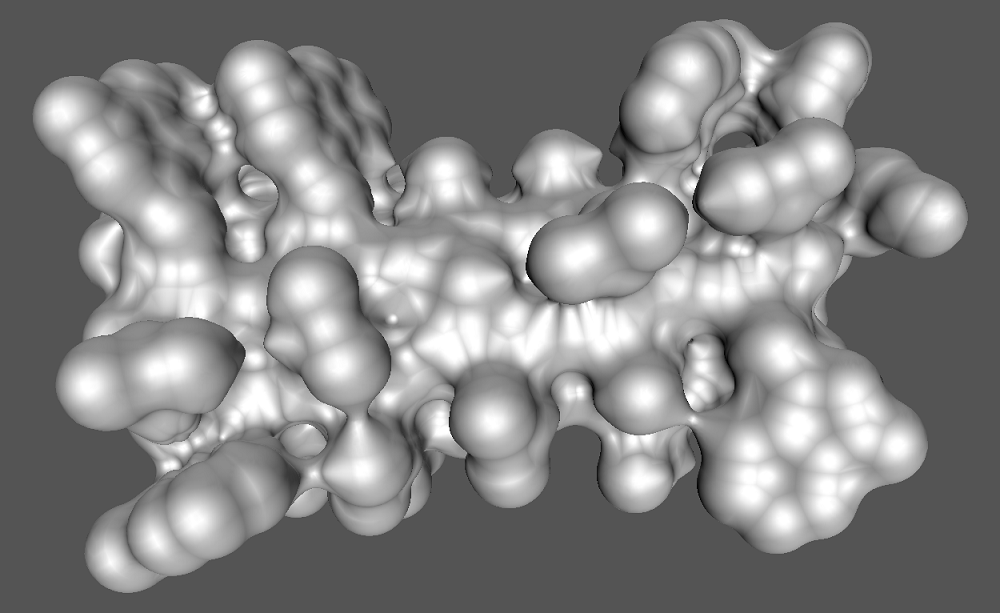
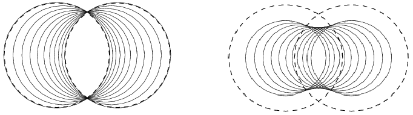

- Generated by
 1.17.0
1.17.0
|
CGAL 6.3 - 3D Skin Surface Meshing
|

Skin surfaces, introduced by Edelsbrunner [1], have a rich and simple combinatorial and geometric structure that makes them suitable for modeling large molecules in biological computing. Meshing such surfaces is often required for further processing of their geometry, like in numerical simulation and visualization.
A skin surface is defined by a set of weighted points (input balls) and a scalar called the shrink factor. If the shrink factor is equal to one, the surface is just the boundary of the union of the input balls. For a shrink factor smaller than one, the skin surface becomes tangent continuous, due to the appearance of patches of spheres and hyperboloids connecting the balls.
This package constructs a mesh isotopic to the skin surface defined by a set of balls and a shrink factor using the algorithm described in Kruithof and Vegter [2].
An optimized algorithm is implemented for meshing the union of a set of balls.

Figure 62.1 Left: Convex combinations of two weighted points (the two dashed circles). Right: The skin curve of the weighted points. The smaller circles form a subset of the weighted points whose boundary is the skin curve.
This section first briefly reviews skin surfaces. For a more thorough introduction to skin surfaces, we refer to Edelsbrunner [1] where they were originally introduced.
A skin surface is defined in terms of a finite set of weighted points \( \ssWpoint{P}\) and a shrink factor \( s\), with \( 0\leq s\leq 1\). A weighted point \( \ssWpoint{p}=({p},\ssWeight{p})\in \mathbb{R}^3\times\mathbb{R}\) corresponds to a ball with center \( {p}\) and radius \( \sqrt{\ssWeight{p}}\). A weighted point with zero weight is called an unweighted point.
A pseudo distance between a weighted point \( \ssWpoint{p} = (p,\ssWeight{P})\) and an unweighted point \( x\) is defined as
\[\pi(\ssWpoint{p},x) = \dabs{p-x}^2 - \ssWeight{p}, \]
where \( \dabs{p-x}\) is the Euclidean distance between \( p\) and \( x\). The ball corresponding to a weighted point \( \ssWpoint{p}\) is the zero set of \( \pi(\ssWpoint{p},\cdot)\). Note that if \( \ssWeight{p}<0\) the radius of the ball is imaginary and the zero-set is empty.
We can take convex combinations of weighted points by taking convex combinations of their distance functions. Figure 62.1 (left) shows weighted points that are obtained as convex combinations of the dashed circles. For further reading on the space of circles and spheres we refer to Pedoe [3].
Starting from a weighted point \( \ssWpoint{p}=({p},\ssWeight{P})\), the shrunk weighted point \( \ssWpoint{p}^s\) is obtained by taking a convex combination with the unweighted point centered at \( p\), formally \( \ssWpoint{p}^s = s \ssWpoint{p} + (1-s) \ssWpoint{p}'\), with \( \ssWpoint{p}'=(p,0)\). A simple calculation shows that, \( \ssWpoint{p}^s = ({p},s\cdot \ssWeight{p})\). The set \( \ssWpoint{P}^s\) is the set obtained by shrinking every weighted point of \( \ssWpoint{P}\) by a factor \( s\): \( \ssWpoint{P}^s = \{\ssWpoint{p}^s \mid \ssWpoint{p}\in \ssWpoint{P}\}\). The shrunk weighted points of Figure 62.1 (left) are shown in Figure 62.1 (right).
We now define the skin surface \( \mbox{skn}^{s}(\ssWpoint{P})\) associated with a set of weighted points \( \ssWpoint{P}\). Consider the set of weighted points obtained by taking the convex hull of the input weighted points. A calculation shows that every weighted point lies within the union of the input balls. Next, we shrink each weighted point in the convex hull with the shrink factor \( s\). Hence, we multiply the radius of the corresponding (real) input circles with a factor \( \sqrt{s}\). The skin surface is the boundary of the union of this set of weighted points:
\begin{eqnarray}\mbox{skn}^{s}(\ssWpoint{P}) &=& \partial\;{\bigcup\{\ssWpoint{p}^s\mid \ssWpoint{p}\in \mbox{conv} (\ssWpoint{P})\}}. \end{eqnarray}
Here \( \mbox{conv}(\ssWpoint{P}) \subset \mathbb{R}^3\times\mathbb{R}\) is the convex hull of a set of weighted points \( \ssWpoint{P}\), whereas \( \partial\) denotes the boundary - in \( \mathbb{R}^3\) - of the union of the corresponding set of balls.
Recall that each weighted point in the convex hull of the input weighted points is contained in the union of the input weighted points. Hence, for a shrink factor equal to one, the skin surface is the boundary of the union of the input weighted points.
By definition of a skin surface, the weights of the input balls (their radius-squared) are shrunk with a factor of \( s\) and the skin surface wraps around the shrunk input balls. In order to make the skin surface wrap around the (unshrunk) input balls, we can first increase the weights of the input balls by multiplying them with a factor \( 1/s\) and then compute the skin surface.
The interface to the skin surface package consists of one main function, taking a set of weighted points and a shrink factor and outputting the meshed surface. Further, it defines classes and functions and classed used to perform the main steps of the algorithm. There are two global classes Skin_surface_3 and Union_of_balls_3 both of which are models of the concept SkinSurface_3 and there are two functions to extract a mesh of the skin surface (union of balls) from the objects of the aforementioned classes. A final function takes a mesh and the Skin_surface_3 (Union_of_balls_3) object it is constructed from and refines the mesh. This section describes these classes and functions in more detail.
The main function of the skin surface package takes an iterator range of weighted points, a shrink factor and the number of subdivision steps and outputs a mesh in a Polyhedron_3:
Where, FT is the number type used by the Weighted_points.
To obtain more control over the algorithm, the different steps can also be performed separately. First, a Skin_surface_3 object is created from an iterator range of weighted points and a shrink factor. Optional arguments are a boolean telling whether the input weighted points should be grown in such a way that the skin surface wraps around the input balls instead of the shrunk input balls.
The template parameter should implement the SkinSurfaceTraits_3 concept. The type WP_iterator, is an iterator over weighted points as defined by SkinSurfaceTraits_3 and FT is the number type used by the weighted points.
For a shrink factor equal to one the skin surface is the boundary of the union of the input balls. In this case the algorithm used for meshing the skin surface greatly simplifies. These optimizations are implemented in the class Union_of_balls_3. The constructor for the union of balls class is similar, except for the missing shrink factor:
With a model of the concept SkinSurface_3 it is possible to generate a coarse mesh isotopic to the skin surface. Using the function mesh_skin_surface_3() with signature:
The last function takes the (coarse) mesh and subdivides it in-situ by applying a given number of 1-4 split operations (each triangle is split into four sub-triangles) and moving the new vertices towards the skin surface. If the number of iterations is not specified, one subdivision step is done. The object of the SkinSurface_3 concept used to construct the coarse mesh is needed to move new points on the skin surface.
The timings of the construction of the coarse mesh and the first subdivision are given in seconds and were done on a Pentium 4, 3.5 GHz, with 1 Gb of memory.
| Data set | Number of weighted points | Coarse mesh | first subdivision step |
| Caffeine | 23 | 0.2 sec. | 0.05 sec. |
| Gramicidin A | 318 | 5 sec. | 2 sec. |
The following example shows the construction of a coarse mesh of the skin surface using the function make_skin_surface_mesh_3(). The output is a Polyhedron_3. Example: Skin_surface_3/skin_surface_simple.cpp
The following example shows the construction of mesh of the skin surface by explicitly performing different steps of the algorithm. It first constructs a Skin_surface_3 object from an iterator range of weighted points and a shrink factor. From this object, the coarse mesh isotopic to the skin surface is extracted using the function mesh_skin_surface_3()
Next, the coarse mesh is refined to obtain a better approximation. The use of Skin_surface_polyhedral_items_3<Skin_surface_3> in the Polyhedron_3 is not necessary, but gives the subdivision a significant speedup. Example: Skin_surface_3/skin_surface_subdiv.cpp